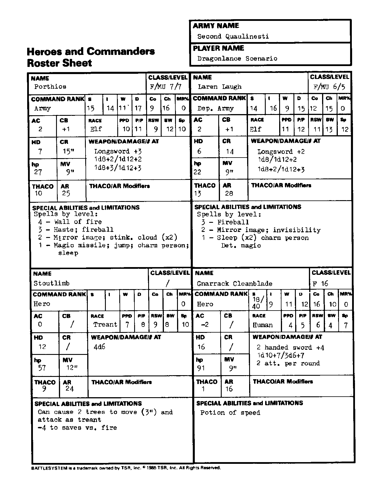

第二奎灵奈斯蒂 Second Qualinesti：英雄与指挥官
能力值顺序：力量／智力／感知／敏捷／体质／魅力。五项豁免依次为麻痹·毒素·死亡魔法／石化·变形／法杖·法棒·魔杖／吐息／法术。移动与指挥半径以桌面英寸计；“—”表示原卡空白或不适用。武器两种伤害分别针对 S/M 与 L 目标；特殊多次攻击另行注明。
波修斯 Porthios
| 项目 | 数值 |
|---|---|
| 职业／等级 | 战士／魔法师 7/7 |
| 指挥职级 | 军队 |
| 六项能力值 | 15/14/11/17/9/16 |
| 种族 | 精灵 |
| 魔法抗性 MR | 0% |
| 护甲等级 AC | 2 |
| 指挥加值 CB | 1 |
| 五项豁免 | 10/11/9/12/10 |
| 生命骰 HD | 7 |
| 指挥半径 CR | 15 |
| 生命值 hp | 27 |
| 移动率 MV | 9 |
| THAC0 | 10 |
| 攻击等级 AR | 25 |
| 武器／伤害／攻击次数 | 长剑 +3；1d8+3／1d12+3；卡片另印 1d8+2／1d12+2，保留此异文 |
| 特殊能力、限制与准备法术 | 四级：火墙；三级：加速、火球；二级：镜影、臭云×2；一级：魔法飞弹、跳跃、魅惑人类、睡眠。 |
拉伦·劳夫 Laren Laugh
| 项目 | 数值 |
|---|---|
| 职业／等级 | 战士／魔法师 6/5 |
| 指挥职级 | 军队副指挥官 |
| 六项能力值 | 14/16/9/15/12/15 |
| 种族 | 精灵 |
| 魔法抗性 MR | 0% |
| 护甲等级 AC | 2 |
| 指挥加值 CB | 1 |
| 五项豁免 | 11/12/11/13/12 |
| 生命骰 HD | 6 |
| 指挥半径 CR | 14 |
| 生命值 hp | 22 |
| 移动率 MV | 9 |
| THAC0 | 13 |
| 攻击等级 AR | 28 |
| 武器／伤害／攻击次数 | 长剑 +2；1d8+2／1d12+2；卡片另印 1d8+2／1d12+3，保留此异文 |
| 特殊能力、限制与准备法术 | 三级：火球；二级：镜影、隐形；一级：睡眠×2、魅惑人类、侦测魔法。 |
壮枝 Stoutlimb
| 项目 | 数值 |
|---|---|
| 职业／等级 | — |
| 指挥职级 | 英雄 |
| 六项能力值 | — |
| 种族 | 树人 |
| 魔法抗性 MR | 0% |
| 护甲等级 AC | 0 |
| 指挥加值 CB | — |
| 五项豁免 | 7/8/9/8/10 |
| 生命骰 HD | 12 |
| 指挥半径 CR | — |
| 生命值 hp | 57 |
| 移动率 MV | 12 |
| THAC0 | 9 |
| 攻击等级 AR | 24 |
| 武器／伤害／攻击次数 | 4d6 |
| 特殊能力、限制与准备法术 | 可使两株树木以 3 英寸移动，并像树人一样攻击。对火焰的豁免 −4。 |
纳拉克·净刃 Gnarrack Cleanblade
| 项目 | 数值 |
|---|---|
| 职业／等级 | 战士 16 |
| 指挥职级 | 英雄 |
| 六项能力值 | 力 18/40；智 9；感 11；敏 12；体 16；魅 10 |
| 种族 | 人类 |
| 魔法抗性 MR | 0% |
| 护甲等级 AC | -2 |
| 指挥加值 CB | — |
| 五项豁免 | 4/5/6/4/7 |
| 生命骰 HD | 16 |
| 指挥半径 CR | — |
| 生命值 hp | 91 |
| 移动率 MV | 9 |
| THAC0 | 1 |
| 攻击等级 AR | 16 |
| 武器／伤害／攻击次数 | 双手剑 +4；1d10+7／3d6+7；每轮 2 次攻击 |
| 特殊能力、限制与准备法术 | 加速药水。 |
兵力卡原图
